- 00 开篇词 你好，产品经理！你的未来价值壁垒在哪儿？.md
- 01 行业视角：产品经理眼中的人工智能.md
- 02 个人视角：成为AI产品经理，要先搞定这两个问题.md
- 03 技术视角：AI产品经理需要懂的技术全景图.md
- 04 过来人讲：成为AI产品经理的两条路径.md
- 05 通过一个 AI 产品的落地，掌握产品经理工作全流程.md
- 06 AI 模型的构建过程是怎样的？（上）.md
- 07 AI模型的构建过程是怎样的（下）.md
- 08 算法全景图：AI产品经理必须要懂的算法有哪些？.md
- 09 K近邻算法：机器学习入门必学算法.md
- 10 线性回归：教你预测，投放多少广告带来的收益最大.md
- 11 逻辑回归：如何预测用户是否会购买商品？.md
- 12 朴素贝叶斯：让AI告诉你，航班延误险该不该买？.md
- 13 决策树与随机森林：如何预测用户会不会违约？.md
- 14 支持向量机：怎么预测股票市场的涨与跌？.md
- 15 K-means 聚类算法：如何挖掘高价值用户？.md
- 16 深度学习：当今最火的机器学习技术，你一定要知道.md
- 17 模型评估：从一个失控的项目看优秀的产品经理如何评估AI模型？.md
- 18 核心技能：产品经理评估模型需要关注哪些指标？.md
- 19 模型性能评估（一）：从信用评分产品看什么是混淆矩阵？.md
- 20 模型性能评估（二）：从信用评分产品看什么是KS、AUC？.md
- 21 模型性能评估（三）：从股价预测产品看回归算法常用的评估指标.md
- 22 模型稳定性评估：如何用PSI来评估信用评分产品的稳定性？.md
- 23 模型监控：产品经理如何建设算法模型监控指标体系？.md
- 24 推荐类产品（一）：推荐系统产品经理的工作职责与必备技能.md
- 25 推荐类产品（二）：从0打造电商个性化推荐系统产品.md
- 26 预测类产品（一）：用户复购意向预测的底层逻辑是什么？.md
- 27 预测类产品（二）：从0打造一款预测用户复购意向的产品.md
- 28 预测类产品（三）：从0打造一款“大白信用评分产品”.md
- 29 自然语言处理产品：从0打造一款智能客服产品.md
- 30 AI产品经理，你该如何提升自己的价值？.md
- 31 AI产品经理面试，这些问题你必须会答！.md
- 春节加餐1 用户增长模型：怎么利用AI技术判断新渠道性价比？.md
- 春节加餐2 一次答疑，带你回顾模型评估的所有基础概念.md
- 期中周测试题 ，你做对了吗？.md
- 期中答疑 AI产品经理热门问题答疑合集.md
- 结束语 唯一不变的，就是变化本身！.md
15 K-means 聚类算法：如何挖掘高价值用户？
你好，我是海丰。
在前面的课程中，我们学习了分类算法：K 近邻、逻辑回归、朴素贝叶斯、决策树，以及支持向量机，也学习了回归算法：线性回归。它们有一个共同点，都是有监督学习算法，也就是都需要提前准备样本数据（包含特征和标签，即特征和分类）。
但有的情况下，我们事先并不能知道数据的类别标签，比如在第8讲智能客服的例子中，因为事先并不知道用户的咨询问题属于什么类别，所以我们通过层次聚类算法把相似度比较高的用户咨询问题进行了聚类分组，然后把分析出的常见高频问题交由机器人回复，从而减轻人工客服的压力。
聚类算法是无监督学习算法中最常用的一种，无监督就是事先并不需要知道数据的类别标签，而只是根据数据特征去学习，找到相似数据的特征，然后把已知的数据集划分成不同的类别。
不过，因为第 8 讲中的层次聚类算法在实际工业中的应用并不多。所以今天，我们就来讲一种应用最广泛的聚类算法，它就是 K 均值（ K-means ）算法。
如何理解 K-means 算法？
每次大学开学的时候都会迎来一批新生，他们总会根据自己的兴趣爱好，自发地加入校园一个个小社团中。比如，喜欢音乐的同学会加入音乐社，喜欢动漫的同学会加入动漫社，而喜欢健身的同学会加入健身社等等。
于是，这些来自天南地北从来不认识的人，追随着同样的兴趣爱好走到了一起，相互认识。这就是我们常说的，人以群分，物以类聚。
K-means算法的原理
如果把这个故事的主角换成机器学习中的数据样本，我们是不是就可以快速给它们进行分类了呢？比如，当几个样本非常相似的时候，我们就把它们归为一类，再用这几个样本的中心位置表示这个类别，以方便其他相似样本的加入。
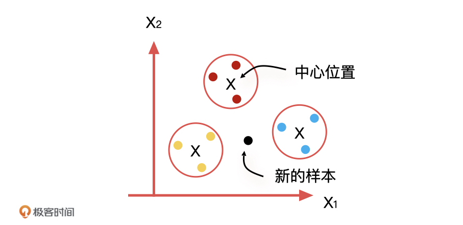
每当这个类别中有了新的相似样本加入的时候，我们要做的就是更新这个类别的中心位置，以方便这个新样本去适应这个类别。
这其实就是K-means算法的思路：对于n个样本点来说，根据距离公式（如欧式距离）去计算它们的远近，距离越近越相似。按照这样的规则，我们把它们划分到 K 个类别中，让每个类别中的样本点都是最相似的。
为了方便理解，我们引入了聚类的概念，聚类就是相似度很高的样本点的集合，我们刚才说的K个类别就等于K个聚类。同时，为了准确描述聚类的位置信息，我们还需要定义这个聚类的坐标位置，就是聚类中心，也就是质心（Centroid），来方便其他待测样本点去评估它距离哪个聚类更近，每个质心的坐标就是这个聚类的所有样本点的中心点，也就是均值。
K-means算法解决聚类问题的过程
K-means算法是怎么解决聚类问题的呢？为了帮助你理解，我们来举个具体点的例子。假设我们现在要给 9 个样本进行聚类，它们有两个特征维度，分布在一个二维平面上，如下图所示。
第一步，我们先随机在这个空间中选取三个点，也就是质心。
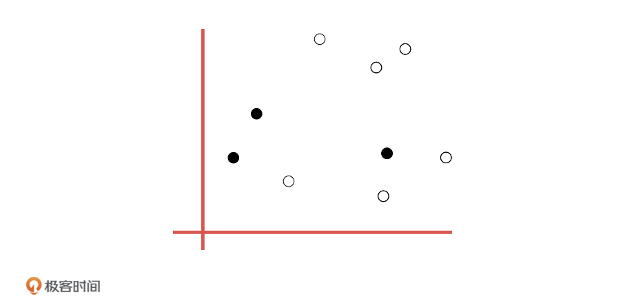
第二步，我们用欧式距离计算所有点到这三个点的距离，每个点都选择距离最近的质心作为的中心点。这样一来，我们就可以把数据分成三个组。
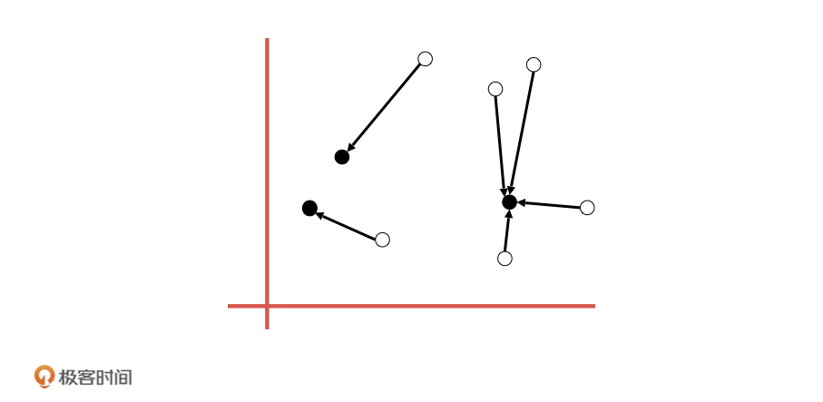
第三步，在划分好的每一个组内，我们计算每一个数据到质心的距离，取均值，用这个均值作为下一轮迭代的中心点。
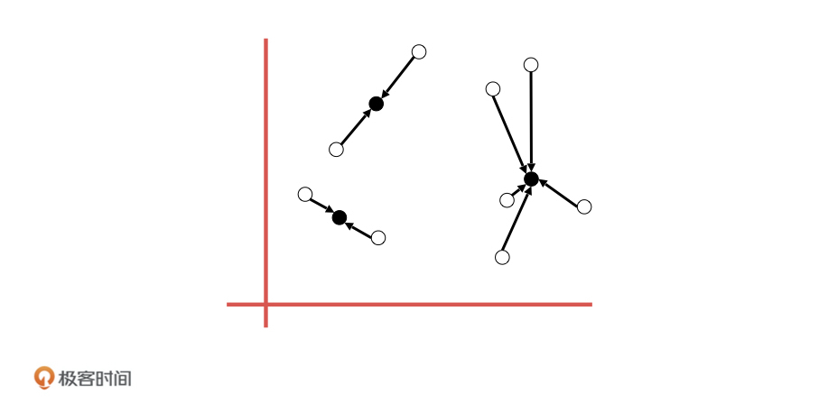
最后，我们不断重复第二步和第三步进行迭代，直到所有的点已经无法再更新到其他分类，也就是聚类中心不会再改变的时候，算法结束。
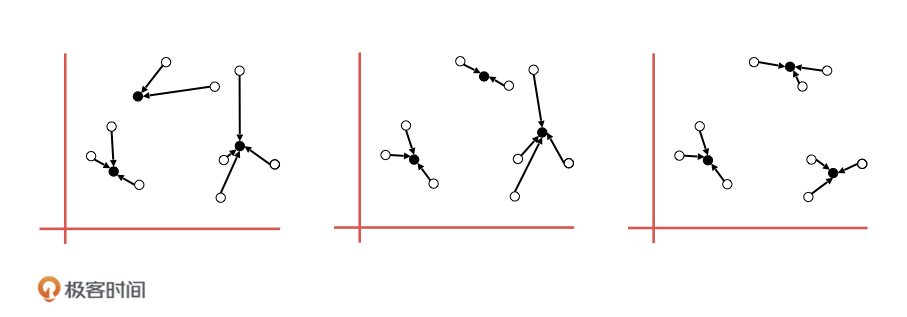
K 值如何确定
K-means 的算法原理我们就解释完了，但还有一个问题没有解决，那就是我们怎么知道数据需要分成几个类别，也就是怎么确定K 值呢？
K 值的确定，一般来说要取决于个人的经验和感觉，没有一个统一的标准。所以，要确定 K 值是一项比较费时费力的事情，最差的办法是去循环尝试每一个 K 值。然后，在不同的 K 值情况下，通过每一个待测样本点到质心的距离之和，来计算平均距离。
比如，在刚才这个例子中，当 K=1 的时候，这个距离和肯定最大，平均距离也最大；当 K=9 的时候，每个点也是自己的质心，这个时候距离和是 0，平均距离也是 0。随着 K 值的变化，我们最终会找到一个点，让平均距离变化放缓，这个时候我们就基本可以确定 K 值了。
应用案例：K-means算法对用户分层
接下来，我们再借助电商平台分类用户的例子，说说K-means算法的应用。电商平台的运营工作经常需要对用户进行分层，针对不同层次的用户采取不同的运营策略，这个过程也叫做精细化运营。
就我知道的情况来说，运营同学经常会按照自己的经验，比如按照用户的下单次数，或者按照用户的消费金额，通过制定的一些分类规则给用户进行分层，如下表格，我们就可以得到三种不同价值的用户。
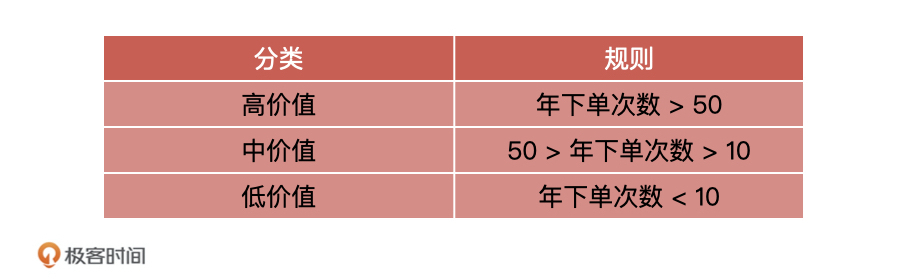
这种划分的方法简单来看是没有大问题的，但是并不科学。为什么这么说呢？这主要有两方面原因。
一方面，只用单一的“下单次数”来衡量用户的价值度并不合理，因为用户下单的品类价格不同，很可能会出现的情况是，用户 A 多次下单的金额给平台带来的累计 GMV（网站的成交金额） ，还不如用户 B 的一次下单带来的多。因此，只通过“下单次数”来衡量用户价值就不合理。因为一般来说，我们会结合下单次数、消费金额、活跃程度等等很多的指标进行综合分析。
另一方面，就算我们可以用单一的“下单次数”进行划分用户，但是不同人划分的标准不一样，“下单次数”的阈值需要根据数据分析求出来，直接用 10 和 50 就不合理。
这两方面原因，就会导致我们分析出来的用户对平台的贡献度差别特别大。因此，我们需要用一种科学的、通用的划分方法去做用户分群。
RFM 作为用户价值划分的经典模型，就可以解决这种分群的问题，RFM 是客户分析及衡量客户价值的重要模型之一。其中 ，R 表示最近一次消费（Recency），F 表示消费频率（Frequency），M 表示消费金额（Monetary）。
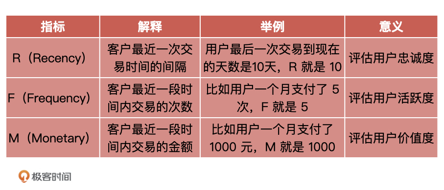
我们可以将每个维度分为高低两种情况，如 R 的高低、F 的高低，以及 M 的高低，构建出一个三维的坐标系。
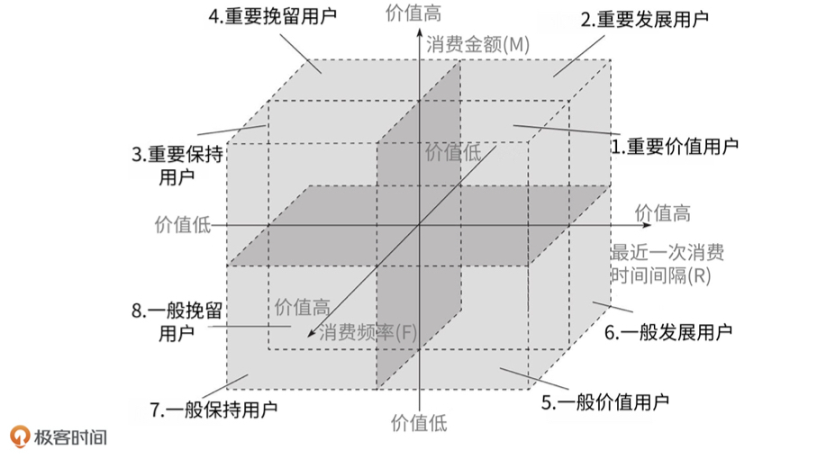
这样一来，我们就把客户分为了\(2^{3}\)，也就是 8 个群体，具体的分类如下：
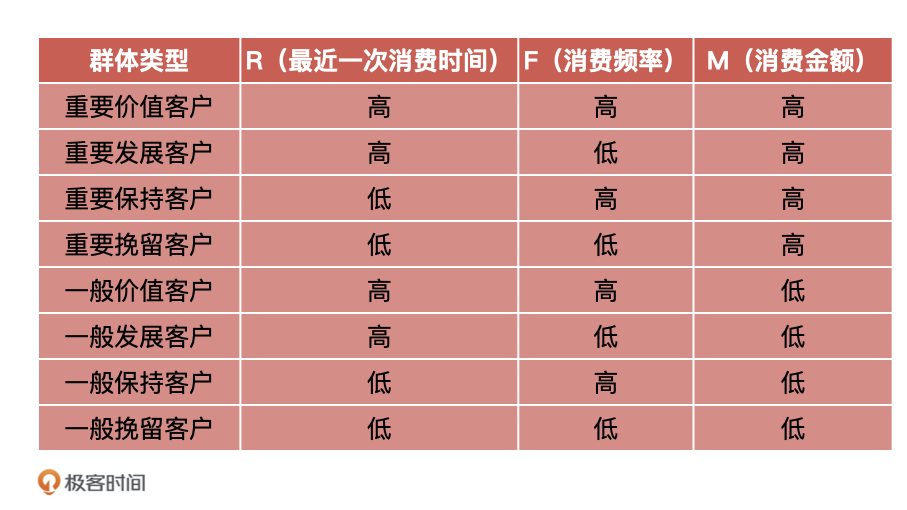
然后，我们通过用户历史数据（如订单数据、浏览日志），统计出每个用户的 RFM 数据：
- USERPIN：用户唯一ID；
- R：最后一次消费日期距现在的时间，例如最后消费时间到现在距离 5 天，则 R 就是 5；
- F：消费频率，例如待统计的一段时间内用户消费了 20 次，则 F 就是 20；
- M：消费金额，例如待统计的一段时间内用户累计消费了 1000 元钱，则 M 就是 1000；
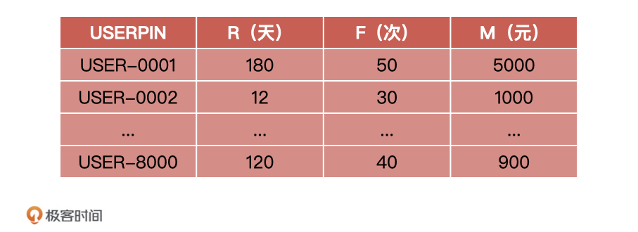
这样，我们就有了 8000 个样本数据，每个样本数据包含三个特征，分别为 R、F，M，然后根据前面 RFM 分为 8 个用户群体，则意味着 K 值为 8。
最后，我们将数据代入到 K-means 算法，K-means 将按照本节课讲解的计算逻辑进行计算，最终将 8000 个样本数据聚类成 8 个用户群体。这个时候，运营同学就可以根据新生成的 RFM 用户分群进行针对性的营销策略了。
好了，这就是K-means 算法对用户进行聚类的全部过程了。除了对用户聚类，K-means 算法可以应用场景还有很多，常见的有文本聚类、售前辅助、风险监测等等。下面，我们一一来说。
文本聚类：根据文档内容或主题对文档进行聚类。有些 APP 或小程序做的事儿，就是从网络中爬取文章，然后通过 K-means 算法对文本进行聚类，结构化后最终展示给自己的用户。
售前辅助：根据用户的通话、短信和在线留言等信息，结合用户个人资料，帮助公司在售前对客户做更多的预测。
风险监测：在金融风控场景中，在没有先验知识的情况下，通过无监督方法对用户行为做异常检测。
K-means 聚类算法的优缺点
在优点方面，K-means 算法原理简单，程序容易实现，运算效率高，并且可解释性强，能够处理绝大多数聚类问题。而且，因为它属于无监督算法，所以不需要利用样本的标注信息就可以训练，这意味着它不需要像监督学习一样过分追溯样本的标注质量。
在缺点方面，K-means 由于不能利用样本的标注信息，所以这类模型的准确度比不上监督类算法。而且，K-means 算法受噪声影响较大，如果存在一些噪声数据，会影响均值的计算，进而引起聚类的效果偏差。
总结
K-means 算法是机器学习领域中处理无监督学习最流行、经典的聚类分析方法之一。它是典型的基于距离的聚类算法，采用距离作为相似性的评价指标，待测样本点距离聚类中心的距离越近，它的相似度就越大。
今天，我先讲了 K-means 算法的原理。我们要重点理解它的应用思路，我把它们总结成四步：
第一步，随机选取任意 K 个数据点作为初始质心；- 第二步，分别计算数据集中每一个数据点与每一个质心的距离，数据点距离哪个质心最近，就属于哪个聚类；- 第三步，在每一个聚类内，分别计算每个数据点到质心的距离，取均值作为下一轮迭代的质心；- 第四步，如果新质心和老质心之间的距离不再变化或小于某一个阈值，计算结束。
K-means 最经典的应用场景就是文本聚类，也就是根据文档内容或主题对文档进行聚类，再有就是对用户进行分类，它们是 K-means 最常用的两个场景。
然后，我还给你讲了K-means 算法的优缺点。关于优点你记住3点就够了，分别是简单易实现，运算效率高，可解释性很强。缺点也是3点，分别是不稳定，容易受到噪声影响，并且不如有监督学习算法准确。
那重要知识总结完之后，我还想带你对K-means算法和KNN 做一个区分。很多同学容易把它们弄混，因为它们的类别信息都会受到当前样本周围的环境的影响，但 K-means和KNN 有着本质的区别，我在下面对它们进行了对比，你可以去看看，希望能帮助你加深理解。
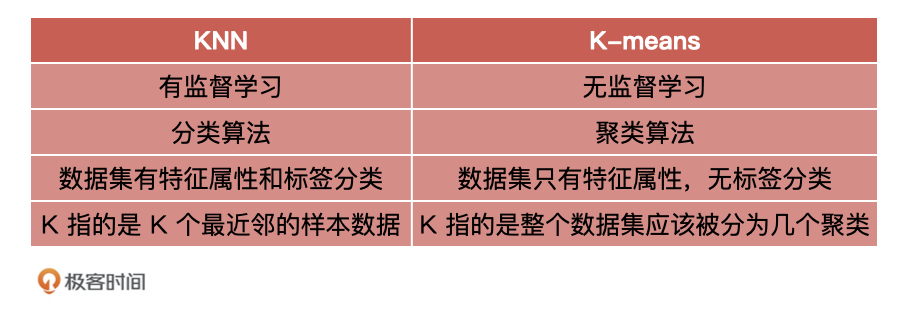
课后讨论
我想请你想一想，在你的业务场景中，有哪些需求可以通过聚类分析的方式来实现。为什么？
欢迎在留言区分享你的故事，我们下节课见！
© 2019 - 2023 Liangliang Lee. Powered by gin and hexo-theme-book.